|
 |
教你炒股票103：学屠龙术前先学好防狼术
(2008-03-19 15:58:15)
似乎有人嫌本ID的课程太慢，而世界上最多就是这种人，100多课，估计里面任何一课都没真正弄懂，就嫌课程太慢？如果你真正弄懂其中任何一课，也不至于在实际操作灰头土脸了。
学屠龙术前先学好防狼术吧，本ID看现在绝大多数是连防狼术都没过关，大盘稍微来点劲，就会被大盘严重侵犯。
在没彻底下面所说的防狼术之前，你也别研究什么中枢、级别的了。因为有了这防狼术，至少不会被大盘严重侵犯，也不会在大盘大跌时鬼哭狼嚎了。
这防狼术，其实在上面的课程都有提及，这里再一次综合地总结。看好了。
就一个最简单MACD指标，0轴分为多空主导，也就是说，一旦MACD指标陷入0轴之下，那么就在对应时间单位的图表下进入空头主导，而这是必须远离的。
各位请自己去看看大盘的60分钟图，5200点MACD跌破0轴并反抽确认后，一直到现在3000多点，一直就在0轴下晃悠，其间产生多大的杀伤力，各位自己难道没有体验吗？
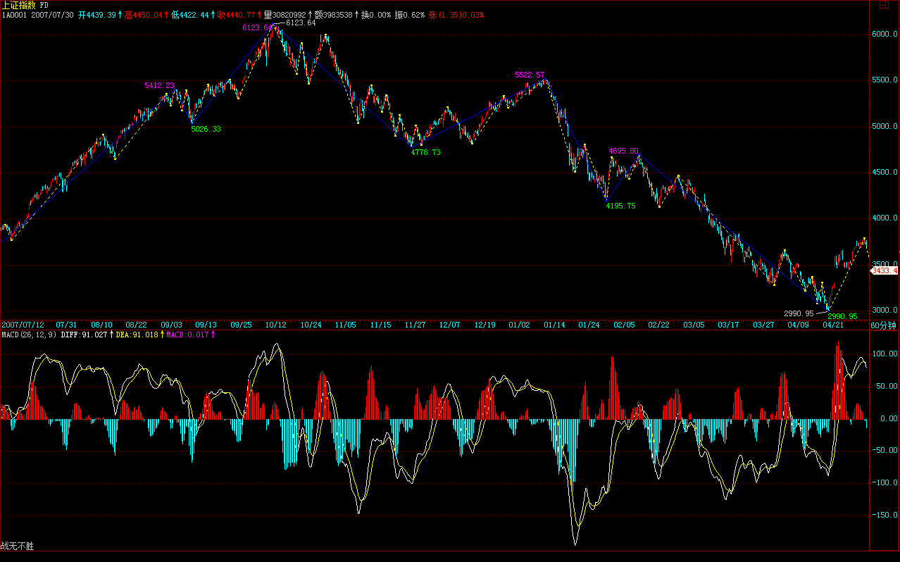
回避所有MACD黄白线在0轴下面的市场或股票，这就是最基本的防狼术。
当然，这涉及时间周期，例如，如果是1分钟，那就经常在0轴下又上的。这里，你可以根据自己的能力，决定一个最低的时间周期，例如：60分钟图上的或30分钟图上的，一旦出现自己能力所决定的最低时间周期的MACD0轴以下情况，就彻底离开这个市场，直到重新站住0轴再说。
当然，如果你技术高点，完全可以在背驰的情况下介入，这是最高的，但这里不能给太高的要求，一切都要傻瓜化，如果你连MACD黄白线是否0轴以下都看不懂，那就彻底离开这个市场吧，地球很危险，回火星去吧。
(2008-03-20 11:13:56)
抱歉，由于一西南地区上市公司的股权收购问题需要和法院和银行接触，下午可能等不到收盘就要去开会，所以今天的解盘和后面的帖子都没有了。现在用昨天写好的一个行情展望替代，要把握大的方向，请好好研究。
今天的大盘其实也不需要再解盘，由于3775点不过(娇注：3775,60分图底分型上沿。分型能否延续成笔，观察底分型上沿能否突破，上沿点位取分型1,3元素的高点），自然就是继续原来的趋势，而浦发和石油给了一个恐吓性洗盘的机会。但可以明确说，目前已经处在宽幅的底部区域里，任何一个洗盘，都给题材股一个轮动的机会。
看看，今天创投的持续，奥运的崛起，这都十分明确。有时间恐慌、骂街，好不如好好去选择布局，看看N多人骂的天鹅已经两个涨停了，有时间还是看图选股去，市场不是靠嘴生存的。
先下，明天见。
2008年行情再展望
去年12月，本ID给出了今年行情的展望，当时的结论，依然都成立，而且很多都正在验证之中。由于今年一季度还没过去，所以最终结果如何，还不能下结论，但有些已经成为定论了，例如，关于今年落“井”机会多多的论断，经过这三个月，大概都应该有所感受了。
由于没有需要修正的地方，所以，本ID还是按原展望的思路根据新的情况进行进一步的拓展，给出一些更精确的提示，以方便后面三个季度的操作。
原展望中，本ID给出今年的节奏应该是扬抑大扬大抑，目前，扬抑这个节奏已经走出来，4778点到5522点的“扬”以及其后的“抑”构成了整个一季度行情的节奏。有人可能认为，4778点到5522点算不了扬，那是被前两年的单边上涨思维所迷惑了，在大调整走势中，这种级别的反弹已经足够地“扬”了。
5522点，是6124点下来的600点，3600点的1/6，这是一个值得关注的点位节奏，如果该节奏继续保持，那么4922点就是中线一个强的压力点。而4778点刚好是6124点下来的1345点，3600点的3/8，因此，下一个低点，最值得关注的是其两倍的位置，也就是6/8的位置，相应是3424点，如果没有特殊的全球性崩盘事件，该点位上下最终形成“抑”的底部的可能性极大。
可以断言，在这轮从5522点开始的“抑”走势结束后，将迎来原展望中所说的第三个节奏：“大扬”，这“大扬”的概念在于，这段走势的幅度，一定大于4778点到5522点的“扬”。
为了更准确地预言这个“大扬”走势，我们必须先回到原展望中的另一个预言，就是今年至少两度见年线，第一次是喜剧，第二次是悲剧。显然，这喜剧和悲剧都在一季度中全部上演了，由于浦发银行突然增发的影响，第一次破年线后的向上喜剧，只延续了不到10天，然后第二次破年线，展开了后面的悲剧，其中的3月4日，是最终确认年线不能有效回拉上去的日子。
但由于年线目前依然保持向上的走势，所以，后面这个“大扬”走势必然展开一次对年线的再度反击。一个很重要的技术信号就是，一旦年线走平后，大盘如果还不能重新回到年线上面，那么，一旦年线转头向下，那才是真正的大调整的开始，所以，前面，从某种程度上说，只是大调整的预演阶段，因为毕竟年线还没有转头向下，一旦紧接着的“大扬”走势不能在年线转头前重新站住年线向上攻击从而带动年线继续上扬，那么，其后的“大抑”走势，将让一季度的“抑”彻底失色。
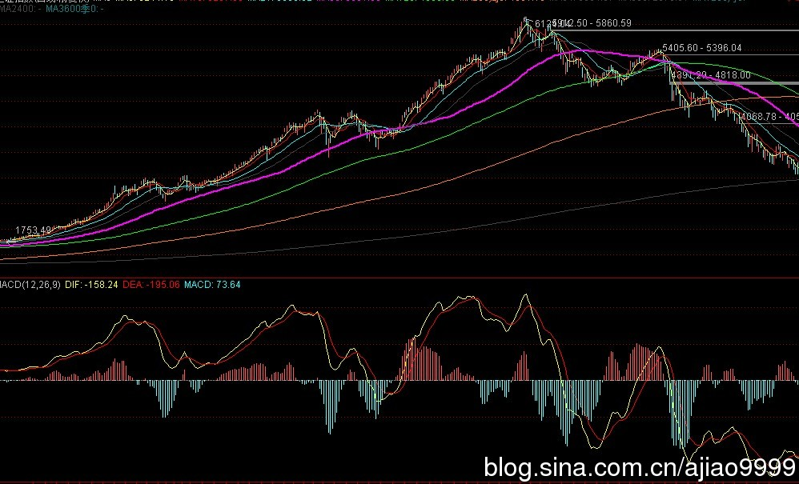
即使紧接着的“大扬”走势能重新站住年线并向上攻击，从而使得年线转头的时间推迟，由于目前的月线MACD刚刚死叉，在这种技术条件下，硬向上攻击的结果，最好的就是制造一个MACD的双头走势，而其后对应的，依然是更大幅度的下跌。MACD双头后的杀伤力，有点技术常识的都应该不陌生，而且这是月线上的，其杀伤力与时间长度可想而知。
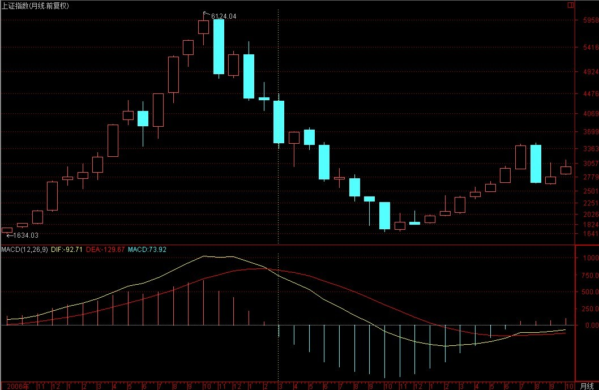
从最直观的技术上说，下一轮真正的大行情，必须等到月MACD回到0轴附近才有可能展开，期间，都是一些小打小闹的走势。
基本面上，其实也完全支持以上的技术走势分析。由于目前的估值完全是按前两年的高增长为背景的，而且依然达到很高的水平，一旦经济走平，这些高估值就完全没有支持的空间，赢利水平的大幅度下降在可预见的范围内，因此，目前那些所谓绩优股票，都有极大的中长线业绩压力，目前的价格都过度偏高。
而且，世界经济的经验告诉我们，大的商品投机潮过后，总会一地鸡毛，而美国经济的问题，远未到解决的时候，这些外部的定时炸弹将随时把经济繁荣的幻想炸裂，而真正的调整压力，在那时才会真正显现。
极有可能，我们将要开始面对一个大的世界经济大调整的困难局面，而我们现在的经济结构，由于丧失了太多做大做强的机会，绝对已经不足以独善其外了。因此，后面的困难可能会超出现在一般人的想象，因为历史的经验告诉我们，真正可怕的调整压力，是经济基础方面产生的，而我们现在极有可能将面临如此的危机。
个股方面，在原展望中已经明确指出，就是题材股，各类题材的反复炒作，将是今后很长时间的主题。而在大的调整市道中，历史经验反复证明，低价题材是永远不败的主题。由于目前的资金量，即使在大的调整中，炒作些低价题材永远是富裕的，所以，只要有投机性资金存在，这就是不死鸟，一有机会就要起飞。
一句话，在今后很长时间内，市场都将是长跑选手的坟墓，短跑选手的天堂。
站在20年的角度，这次的调整，依然是超级大牛市中的一个中继性调整，但20年的前提是，你能熬过这个冬天，否则，20年的超级大牛市，对于你来说，毫无意义。
3780点，短线生命线。
(2008-03-21 15:29:38)
电话太多，晚点，抱歉。
昨天早上11点就给出的帖子已经给予各位最充分的提示了。众所周知的技术习惯，只要在3%的范围内，都是可以认为目标位触及有效。本ID给出的目标位置是3424点，而昨天的低点已经在其3%的范围内，因此，就此就上去，也已经在技术上十分完美。而昨天，本ID用恐吓性洗盘给出昨天早上的技术实质，这个提示已经足够明确，如果没反应，本ID也没办法了。
现在，当然不能说大盘就没有再次探底的可能，但大盘底部至少有一只脚是落地了，现在唯一需要探讨的只是这底部是独脚的还是双脚的甚至是多脚的。而决定这一切的，就是这3780点，这是60分钟新的底分型的上沿位置，只要站住这个位置，那么，至少在60分钟图上，将延伸出向上的笔，而这意味着这反弹是独脚的。
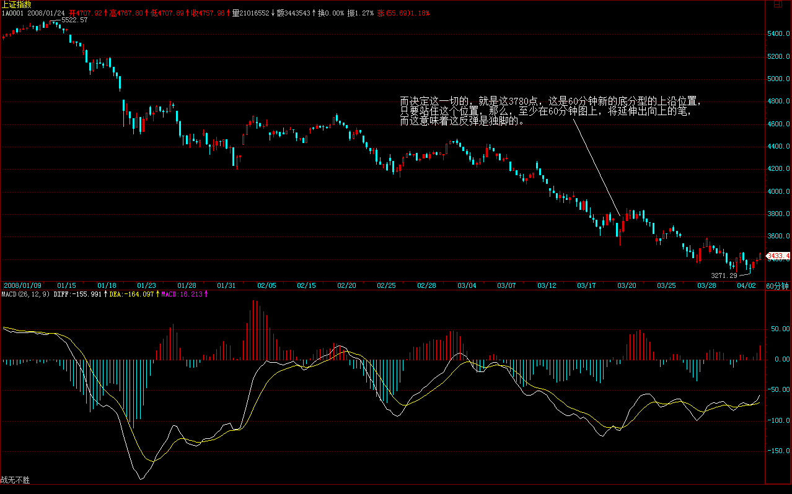
技术上，30分钟的MACD刚好在0轴上受阻，因此，只要下周初能站住3780点，那么这0轴也就会被突破，从而带动60分钟的向0轴冲击，对应这走势上将往上再上攻一段。 当然，如果站不住3780点，30分钟MACD就会出现0轴受阻再回跌的形态，对应着大盘当然就要再次探底了，所以，从这角度更说明了，3780点的重要性。
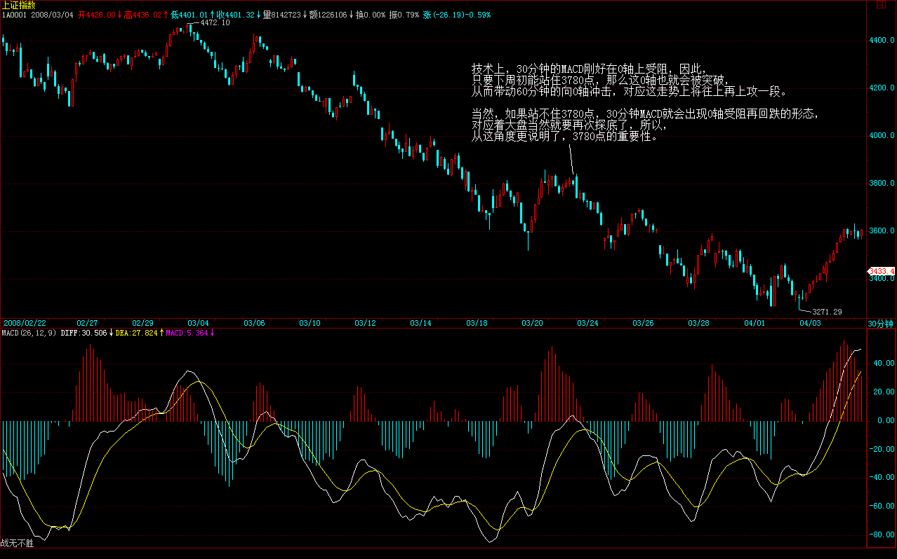
由于目前的日线上已经出现底分型，而上边沿在3941点，因此那个位置，是决定大盘反弹的级别能否扩展的关键位置，一旦站住那个位置，重新回到原来60分钟3-4的类中枢就不成问题了。
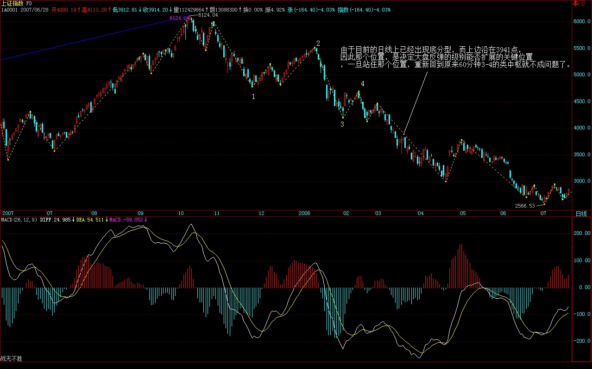
个股方面，还是本ID一路给出那几个板块在轮动，最近中小钢铁的走强，是因为重组的预期，这更说明，重组的挖掘是一个长期有效的主题。目前，还是小盘低价更有优势，你看，同样的题材，天鹅就比国电强，为什么？就是因为盘子小，国电30多亿的盘子，要敲动起来当然难度要大点、要慢点。
有些无聊人总是唠叨什么322，那算个鸭屁，难道堂堂大陆人民要为一个破渔村选村长这样的破事看他们的脸色，简直脑子进水了。
本ID给那些什么台港澳的人一句忠告，你们还有几年把自己当回事看的时间，过了这时间，你们什么都不是，别老觉得大陆人民欠了你们什么，你们那些要挟卖乖的筹码越来越没价值，等哪天发现，一个巨大的经济体不可阻挡的融化力时，后悔都没门。
给脸不要脸的最后连内裤都保不住。
有时间看322的无聊戏，还不如看看本ID的七律：。
先下，再见。
3780生命线失守再次探底
(2008-03-24 15:16:13)
上周五已经超级明确地说了，3780点是短线生命线，站不住就再次探底。今天早上，跌破3780点后两次反抽上不去，确认跌破有效。然后下午2点那标准的第三类卖点成立后，跌幅明显加大。一切都极端技术化。
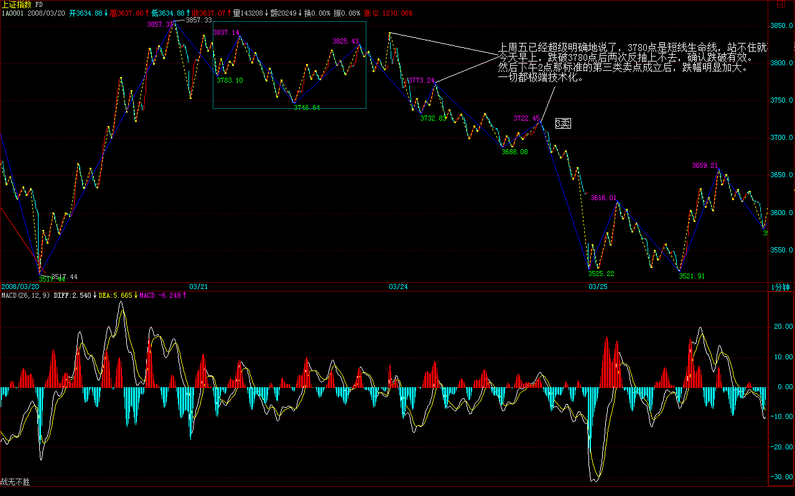
如果你没把握住这先卖等回补的节奏，那就恭喜你，你又要坐一次电梯了。当然，看到3780点失手，或最晚在第三类卖点跑掉的，那么就已经成功把上周抄底的了结，白花花的银两等待下一个买入的机会。
不过，由于目前已经在中线底部的震荡区域里，因此，每次震荡后沉淀一定的底仓是完全可以的。这要根据每人的资金量决定了。
如果你上去不舍得跑，破技术位也不舍得跑，把股票当宝贝，那建议你还是小板凳吧。现在的大盘，依然杀机重重，这样的心态，只有死路一条。
现在，就等平安的事情有一个了结了，管理层不能光说不练，材料报上去这么长时间，怎么都该有说法了。
个股方面，上一次强调的是短线下跌40%以上的中低价中小盘股，例如，已经4个涨停的天鹅就是最典型的例子。下一次，依然是这种股票，但注意能有双底支持的，而且一定要有新资金介入迹象，也就是放量后有一个缩量站住的。
周末有人吹嘘绩优股，但本ID依然要说，题材才是真。低价、重组、题材是今年不变的主题。
先下，再见。
万事具备只待平安事了
(2008-03-25
15:09:37)
众所周知，这次从5522点开始共2000点的下跌，导火索就是平安，因此，在目前的底部震荡中，其实已经万事具备，但就差这平安破事最后有一个众望所归的结果，这也算是大盘最终走出底部震荡的一个最基本的心理支持。
现在，差的就是这一点，但这一点却迟迟不能出现。如果按这样的审查速度，那么管理层的办事效率也太说不过去了。今年的市场犯小人，总是在关键的时刻来些妖蛾子，这次如何，就看这市场的运气了。
今天的大盘依然是中低价题材股的天下，个股方面，已经有很多按捺不住了，但只要大盘不能真正走出底部，这些个股行情的延续性就有问题。
技术的角度，超短线的关键位置在3616点，一旦再次有效跌破，那么破底而下就基本成为必然的选择。
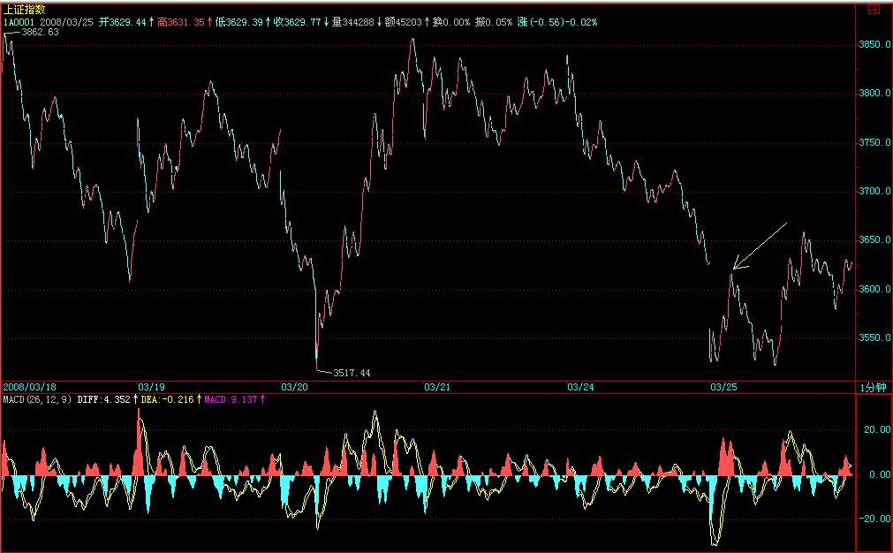
上面的位置，还是和前面的分析一样，首先要面对的是3780点，这点不有效突破，大盘依然只能在底部徘徊。（娇注：后底分在前底分范围内，观察前底分的分型上沿能否欲破延续成笔）
明天，超短线，最简单就看5分钟的MACD，现在刚好站在0轴，明天如果能从此来起，那么将带动30分钟的MACD再次冲击0轴，对应大盘将有一个向上冲击的过程。如果这种局面出现，一定要注意30分钟MACD是否又在0轴受阻，一旦出现，应当把今天买入的择机退出。
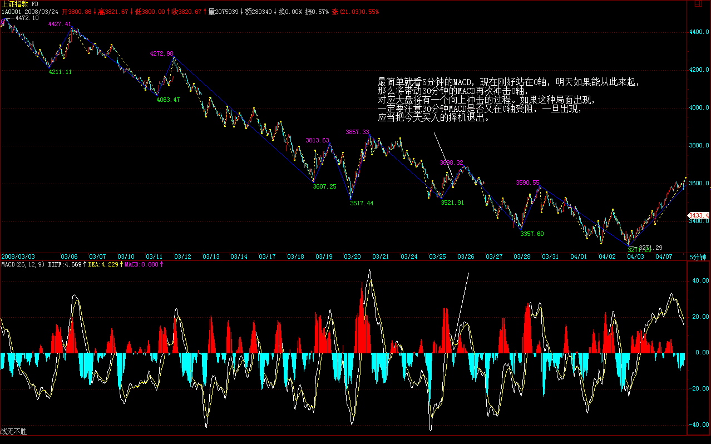 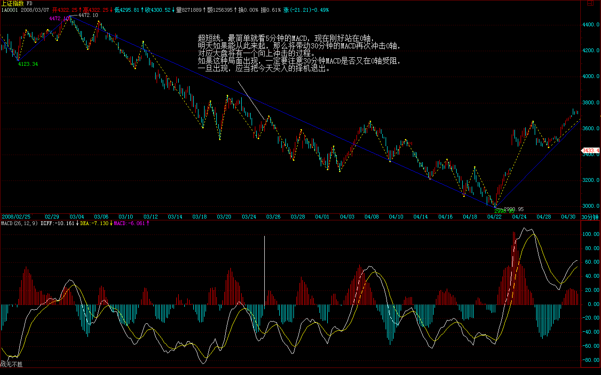
但对于大资金，应该把适当筹码进行沉淀。大资金必须是成本不断降低而筹码不断增加的动态建仓，这是一个基本的原则。
先下，再见。
3616点，短线关键。
(2008-03-26 15:15:26)
昨天让各位注意5分钟MACD站稳0轴后上攻的情况，结果今天早上走出一个标准的盘整背驰，红柱子小于前面一组，而也只带动了15分钟MACD回拉0轴受阻，因此其后的回落就理所当然了。
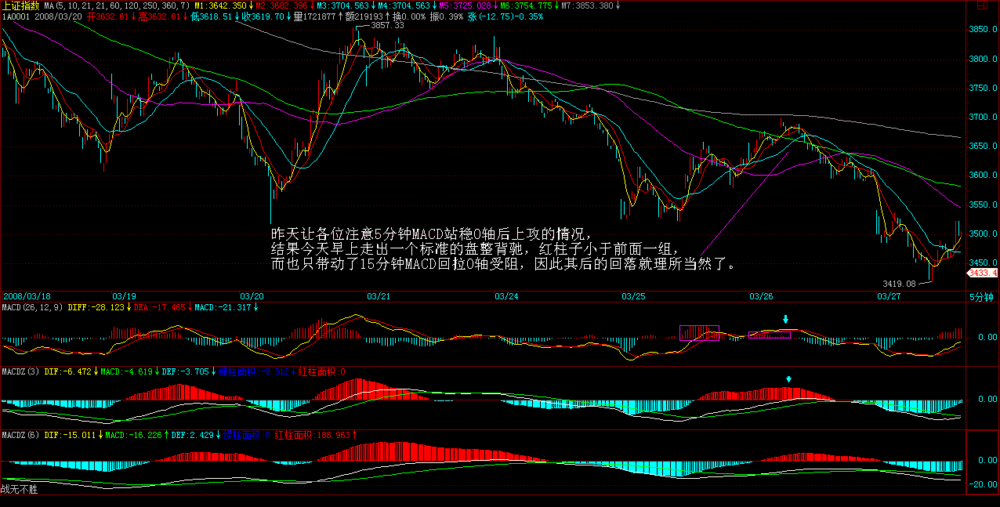
当然，如果你看不懂图，看到580989突然启动，也知道大盘要回头了。580989春节前就给了各位一个最基本的原则，0.6为中枢，只要好好把握这原则，你能赚多少钱算都算不过来了。不过，现在收盘已经到0.8附近，已经远离中枢，后面就是风险极大的阶段了，所以，今天没介入的，一定不能介入。该权证今天在0.7上下一个小级别背驰后回到次级别中枢形成大级别的中枢，因此短线0.7上下这中枢是对比关键，是否后面的上涨形成背驰，就以这中枢为基准了。
注意，权证是高度投机活动，而且很明确告诉各位，这是580989最后一大行情，毕竟还有2个多月就到期。
之所以再说580989，是请各位留意，上次580989从0.4下启动，对应了大盘一次快速的破位，这次是否重演，关键看昨天就说的3616点。
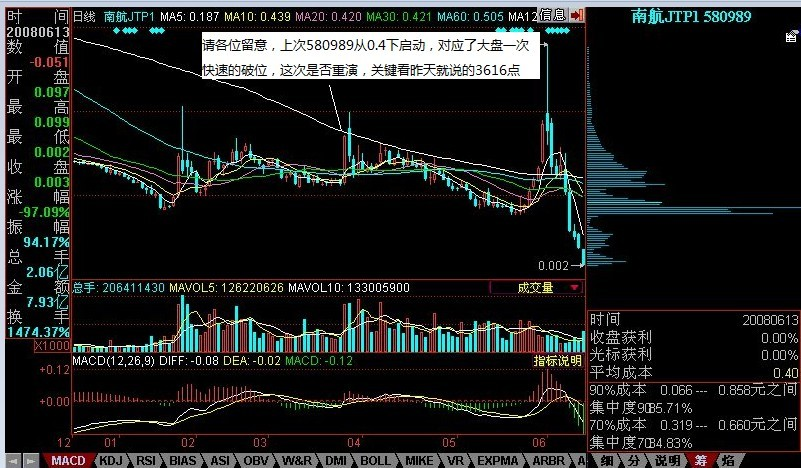
现在的问题就是平安，平安没说法，游资只能投机，谁怕谁呀。投机的好处在于，把短线资金的货给震出来都跑去诸如580989之类上，这样，中线的建仓也顺利了。今天，很多新板块已经暗流涌动，即使有再杀跌的过程，也是这些板块最好的介入时机，好好珍惜吧。
580989就看戏，看如何让你目瞪口呆，如何让最后的贪婪者套在高高山上永不超生。
先下，再见。
|
|
|
|